记一次试驾体验：极氪7X车主眼中的理想i6，找到了家用SUV的另一种答案
一、引子
昨天，终于试驾了理想的车，之前理想 L 系列卖的很好的时候，并没有想去试驾，主要是基于两个点：
① L 系列外观的套娃
缘由在校门口执勤的时候，看到理想的车过来之后，几乎不能在看到车头之后便猜出车型，当即便决定后面换成不考虑理想。
② 被反复提及的开船感
虽然没有去试驾理想的车，但一直有看车评的习惯，各个平台也会推送一些真实的车主反馈，开船感便是被反复提及的一个点
昨天试驾的车型是 i6，上面提及的两个点也都没有，于是趁着有空在 10 点商场刚开门的时候就去到了理想的展位。
二、第一次试驾理想的车
和销售沟通后，决定试驾两驱版本， 这辆车选配了后排屏幕和电子后视镜。
PS：下面的所有图片，都是用手机来随手拍的，部分场景受限于光线和时间因素，拍出来的图不够好，可能和实际情况有出入。
1️⃣ 试驾流程
① 签署纸质协议
对的，你没有看错，是纸质协议， 要手写姓名、身份证号、联系方式。
瞬间让我回到七八年前，当时试驾比亚迪的时候，需要带好驾照和签纸质协议。
之前试驾 10 多次，其他家都是扫码填写信息即可。
② 出示驾驶证
我当时没有带驾驶证，便询问随申办中的驾驶证是否可以，因为在试驾其他新势力车型的时候，基本上是拍一下随申办中驾驶证的照片。
销售说不可以，需要交管 app 里面的驾照，因为里面的附带一个动态二维码，是公司的一个新规则，规避有销售P 驾照图，虚假试驾。
和销售说明，手机上没有安装交管 app 之后，他把随申办上的驾照图仔细拍了照片，说是需要做下备注。
③ 试乘和体验超充
和销售一起从商场的地下车库上车，先试乘后试驾。
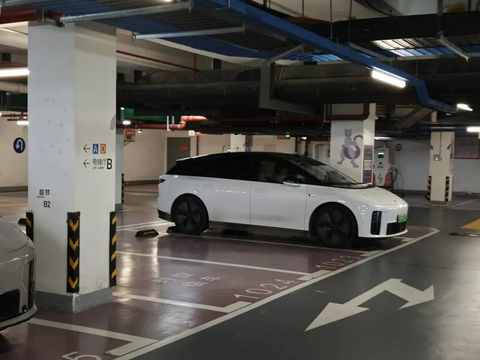
上车后，刚出车库销售便开启导航，位置是附近的理想超充站，接着便把换挡拨杆往下拨动两下，开启智驾。
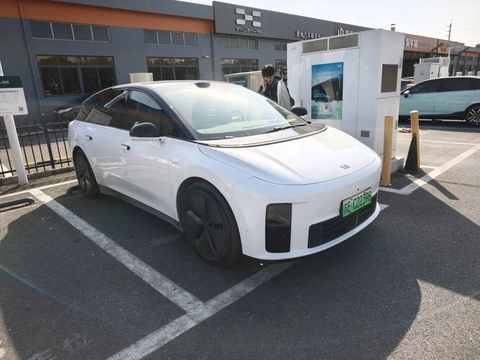
前排的两个大屏
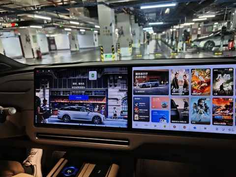
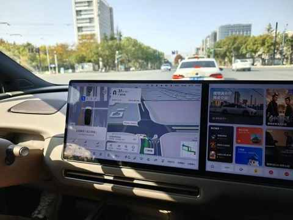
主驾视角
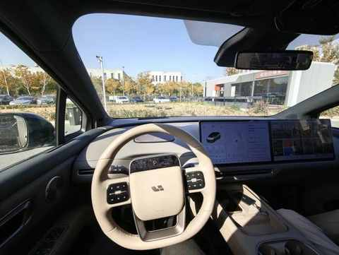
后备箱下沉空间
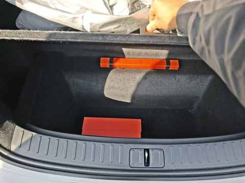
机械门把手
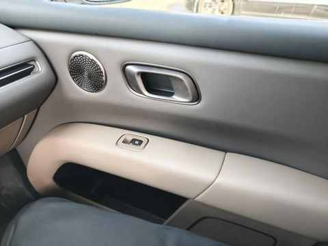
前备箱
轻敲两下，即可开启一条缝，需手动打开及手动关闭
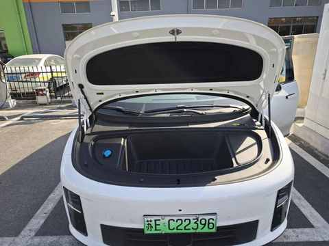
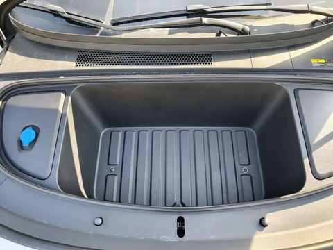
后排
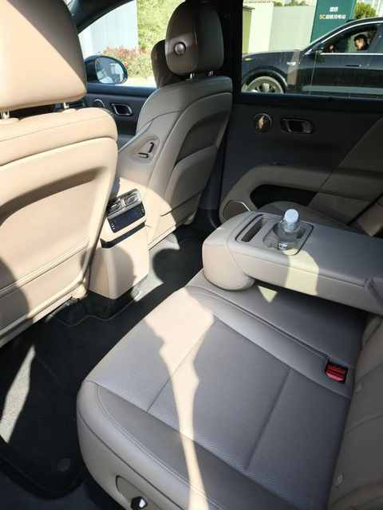
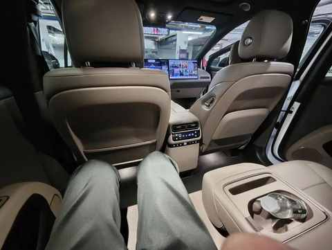
电耗默认显示为驱动电耗
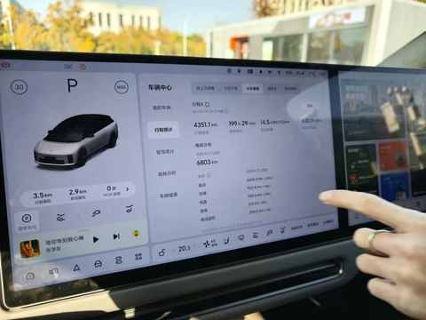
各种报告
智驾完成后有行程报告，充电完成后有超充报告
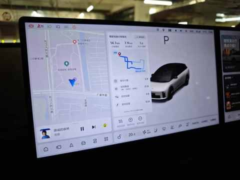
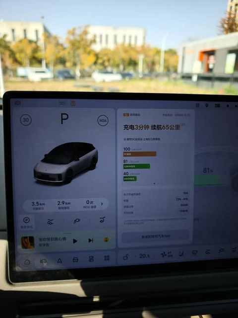
后排娱乐屏
大小和清晰度都不错，没有小朋友能拒绝
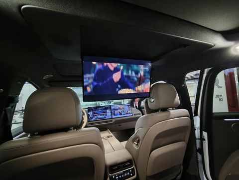
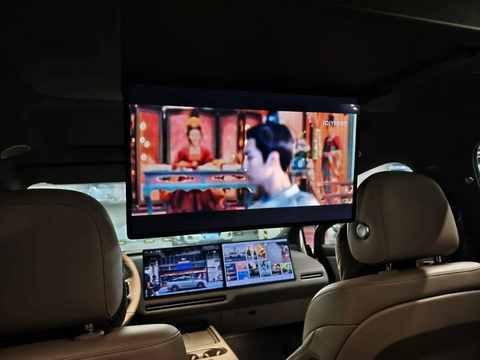
2️⃣ 主观试驾感受
在理想的超充站，体验3分钟超充后，正式开启本次试驾。
① 和其他新势力不一样
1）试驾流程有点复古
当销售拿出纸质试驾协议的，我稍有意外，还特地确认了下是要填写纸质协议，销售给予肯定的答复。
我稍有意外的原因是：因为之前一年多试驾 10 多款车，都是直接微信扫码，填写相关信息。
2）换乘点是理想超充站
一个特别巧思的设置，先从商场，由销售开去超充站，体验几分钟超充的同时也能顺便换到驾驶位。
在去往超充的路途中，销售便会科普理想的 5C超充站的相关技术和建站数量，充电的间隙也会结合充电界面讲解充电功率等信息。
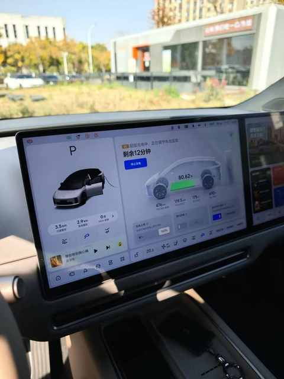
其他家一般都是到某个公交站台或车少人少的小路边上换到驾驶位。
这么一想，蔚来的换电站也可以这样让人在试驾的时候感受到，试驾的时候开去换电站，花 5-10 分钟感受下换电。
之前试驾过两次蔚来的车，但一次换电都没有体验过。
② 有深刻的8个点
1）极致家用
方向盘偏轻，加速和油门偏线性，特性和油车类似。
悬架偏舒适调教，空悬支持三个高度调节，过各种路段的表现比较一致。
2）智驾表现不错
不愧是第一梯队，市区道路可用性不错
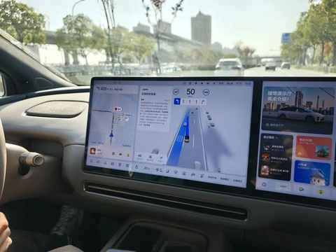
3）hud 特别清晰
显示很是惊艳，各类信息显示全面，可惜我拍的照片不太能看出来效果。
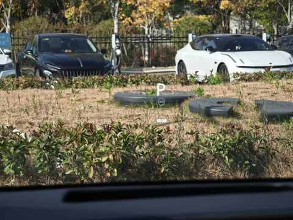
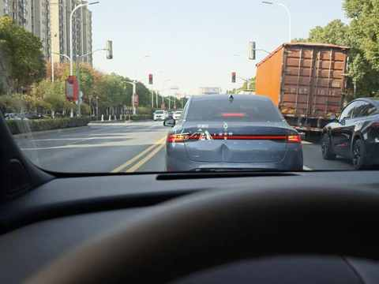
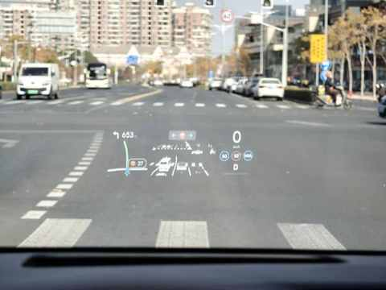
4）流媒体后视镜清晰度挺高
需要一点试驾去适应，特别是车速偏快的时候。
流媒体后视镜解决了一个很大的痛点：在多人使用同一辆车的情况下，不用再频繁调整其位置。
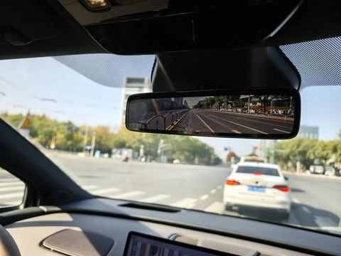
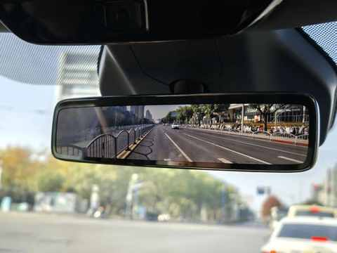
5）方向盘上的小屏幕居然可触控
理想在方向盘上的小屏幕也是其特色之一了，试驾了才知道，这块小屏幕居然支持触控，可触控切换显示的信息及切换一些设置项。
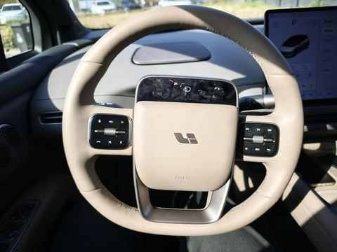
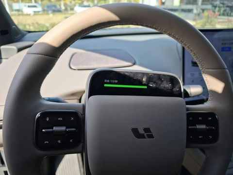
6）坐好后看不到车头
开起来之后倒没有不适应，比较无感。
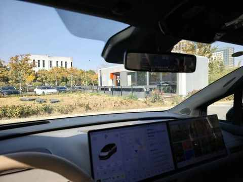
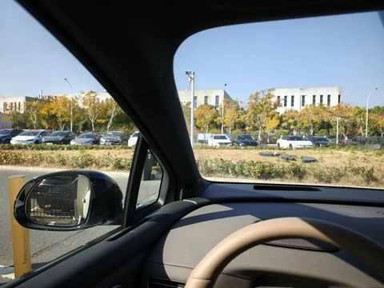
7）好上手
方向盘偏正圆形，大小适中，对新手很友好。
即使设置为运动模式，方向盘依然轻柔，操作便利。
8）没有开船感
明显的家用和舒适调教，路面震动能很好的被过滤掉。
刹车和电门都很线性，在急加速和急刹车的情况下也不突兀。
3️⃣ 与 极氪 7x 的对比
由于试驾的时间特别有限，只能从有限的信息里面去总结一些点。
① 配置有差别
i6 没有下面三个我每天都在用的配置：头枕音响、 仪表盘。
智驾不提也罢，市区道路我压根不敢开极氪的智驾，虽然新的 6.5 系统有升级，但其和第一梯队的差距仍然没有缩小多少。
7x无官方的流媒体后视镜选配，前备箱无法通过敲击机箱盖的方式开启，在车外只能通过手机 app 开启。
② 更偏家用和舒适调教
两个车的空间表现都不错，宽度接近，长度 i6 稍长一点。
i6 没有 7x 好开， 运动性不足，更适合家人一起乘车出行的场景，i6的运动模式约等于 7x 的舒适模式。
相较而言，7X 更适合自己一个人开或更喜欢开车的人。
③ 自营快充站数量差别巨大
极氪的自营充电站太少太少了，和理想及蔚来比压根不是一个数量级，好像也没有快速增加的趋势。
特别是在高速上，我一般是首选理想和蔚来的充电桩，其次再是国家电网的，没有交过极氪的充电桩。
三、结语
在整理这篇文章相关信息的时候，被理想汽车最新的数据惊到了，可谓是：不查不知道，一查吓一跳。
理想汽车的累计交付突破了 150 万。
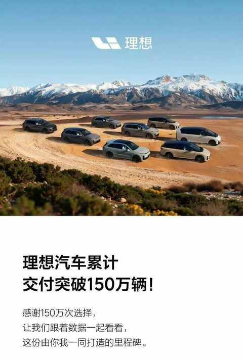
再仔细结合本次的试驾体验， 满分 10 分，能给到 7.5 分。
如果再今年再让我选一次，我依然选 7x，但 i6绝对是家用SUV的另一种答案。
近期文章
知行合一才是解药
90年，35岁，跑步30个月，3442km，带来的5个改变
真香！坚持使用小鹤双拼一年后，这4个感受不吐不快
农村、大专生、笨小孩：我的来时路
双持党的秋冬体验：当指纹识别频频失效，才懂得FaceID的好处
不思考，你就会买很多并不需要的东西
别再问我省多少油钱了！作为 8年新能源车主，我想说
35岁的这个11月，我竟挑战了这么多“第一次”
90年，35岁，日更90天，有了这 3 个意外收获
听播客5年，日均108分钟：这3个收获，让我认识到“声音”的力量
小米高端化成了吗？拿15S Pro当主力机4个月，我有这5个真实感受